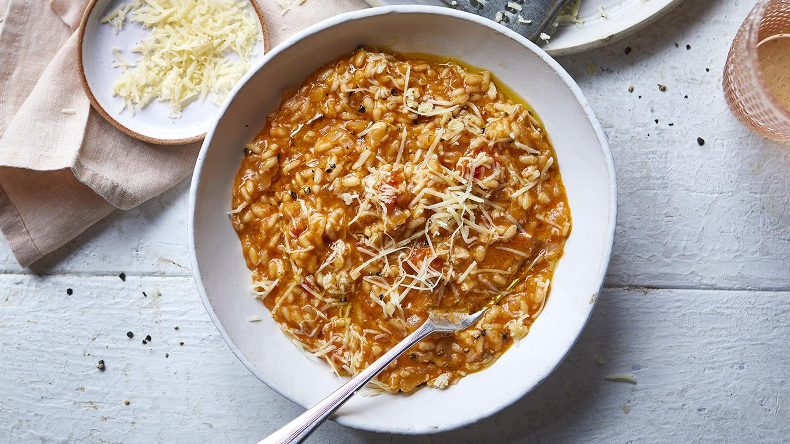

Easy tinned Tomato Risotto

Description
Adding tinned tomatoes to your risotto adds loads of umami flavours without any expensive ingredients.
Ingredients
- 2 tbsp olive oil, plus extra to serve
- 2 medium onions, finely chopped
- 2 garlic cloves, crushed
- Half tsp dried mixed herbs or dried oregano, plus extra to garnish
- 400g tin chopped tomatoes
- 300g/ 10.5 oz risotto rice
- 1 vegetable or chicken stock cube
- 900ml/ 1.5 pint freshly boiled water
- 40g/ 1.5 oz cheddar, finely grated
- Salt and ground black pepper
Steps
- Heat 1 tablespoon of the oil in a large saucepan and fry the onions over a medium heat for 6–8 minutes or until soft, stirring regularly. Add the garlic and mixed herbs. Continue to fry for 1 minute, stirring constantly, then add the chopped tomatoes. Season well with a little salt and lots of black pepper and simmer for 4–5 minutes to reduce the liquid, stirring often.
- Add the risotto rice and stir for a minute to coat in the tomato sauce. Next add the stock cube with around 100ml/3½fl oz of the hot water. Stir continuously and, once the water has been absorbed, add some more water.
- Keep repeating until the rice is cooked and looks rich and creamy (this should take about 20 minutes). Add a little more water if needed until the right consistency is reached.
- Remove from the heat and stir in almost all of the grated cheddar. Adjust the seasoning to taste. Serve with a glug of olive oil, a pinch of oregano and the remaining cheese to garnish.
Homepage